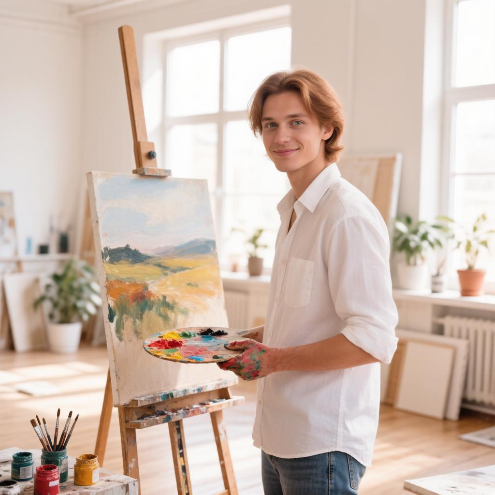
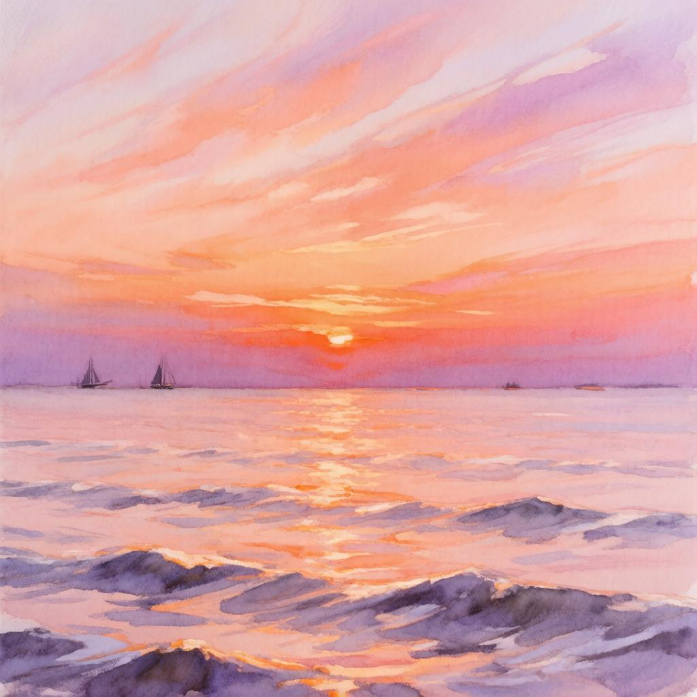
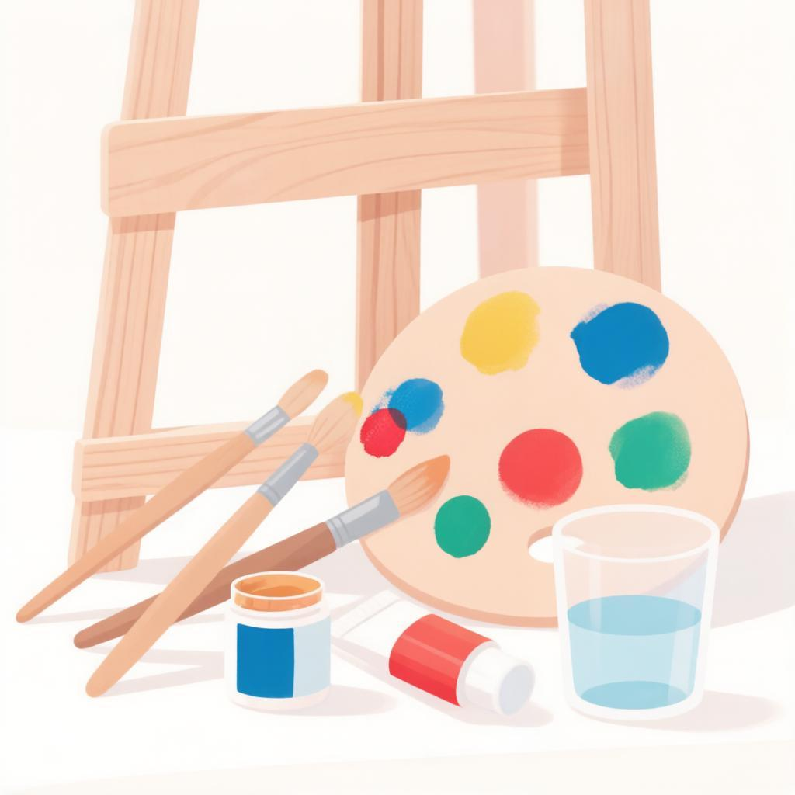

Портфолио хобби

Обо мне
Привет! Меня зовут Артём. Я увлекаюсь акварельной живописью с 10 лет.
Это пространство, где моё хобби становится искусством. Здесь я собираю свои работы: от первых экспериментов до любимых серий.

Мои работы
Здесь собраны мои любимые работы. Каждая из них — это история, настроение и вдохновение.
«Закат на море» — одна из моих первых серьёзных работ, выполненная акварелью в стиле импрессионизма.

Мои инструменты
Кисти: набор синтетических кистей разных размеров для акварели.
Краски: профессиональная акварель «Белые ночи» — яркие, насыщенные цвета.
Бумага: хлопковая акварельная бумага плотностью 300 г/м².
Письмо преподавателю ✉
Есть вопрос по урокам, заданию или разбору темы? Напиши мне — отвечу лично, помогу разобраться и подскажу, куда двигаться дальше.
Я всегда на связи — как наставник, который рядом, пока ученик ищет свой путь.